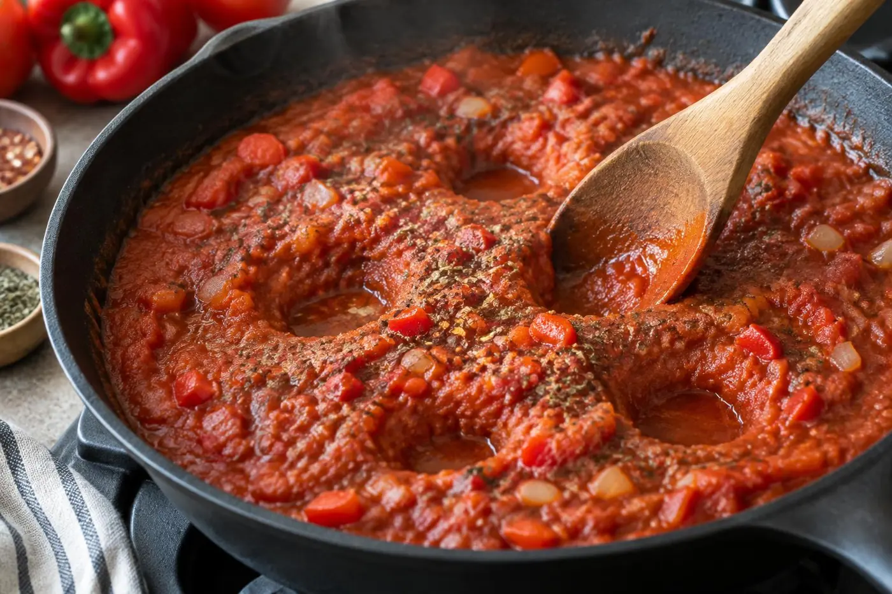
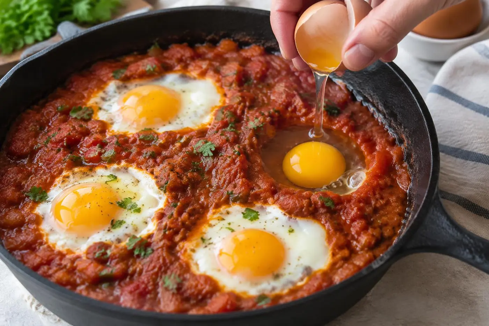

We love this as a lazy weekend brunch that also works as a Tuesday dinner. The one thing not to skip is the bread, because the spiced sauce is half the reason to make it. Pull the pan off the heat while the yolks still wobble, since they keep cooking on the way to the table.
The Bored of Toast kitchen ♥Picture a skillet of brick-red tomato sauce, bubbling gently, with six glossy eggs set into it like jewels. Shakshuka, a dish loved across North Africa and the Middle East, looks like a showpiece but relies almost entirely on pantry staples.
Its depth comes from blooming the spices. Cumin and smoked paprika hold much of their flavor in fat-soluble compounds, so a minute in hot olive oil releases far more aroma than stirring them straight into tomatoes. Covering the pan at the end traps steam, which cooks the tops of the eggs while the undersides stay soft.
Why you'll love it
Pantry-friendly
Canned tomatoes, an onion and a pepper are the backbone, so it's easy any day.
One pan, few dishes
Sauce and eggs cook in the same skillet, which goes right to the table.
Sauce freezes well
Make a double batch and poach fresh eggs in it on a busy night.
Ingredients
Tap an ingredient to check it off as you go.
For the sauce
For the eggs and topping
Cook mode keeps your screen awake while you cook.
Instructions
Tap a step number to mark it as done.
- 1
Soften the onion and pepper
Heat the olive oil in a 10 to 12 inch skillet over medium heat until it shimmers. Add the onion and bell pepper with a pinch of salt and cook, stirring occasionally, for 7 to 8 minutes, until soft, sweet-smelling, and the onion is translucent with golden edges. The salt draws out moisture so the vegetables soften instead of scorching.
- 2
Bloom the spices
Add the garlic, cumin, smoked paprika and red pepper flakes and stir constantly for about 1 minute, until the oil turns rusty red and smells toasty. Keep everything moving so the garlic softens without browning.
Tip: If the spices start to smell sharp or look dark, add the tomatoes right away. They cool the pan instantly and stop any scorching. - 3
Simmer the sauce
Stir in the crushed tomatoes, sugar if using, salt and a few grinds of black pepper. Bring to a gentle simmer and cook for 8 to 10 minutes, stirring now and then, until the sauce thickens enough that a spoon dragged through it leaves a trail for a second or two. Taste and adjust the salt, since the eggs will need a well-seasoned bed.

- 4
Nestle in the eggs
Use the back of a spoon to press 6 small wells into the sauce, spacing them evenly. Crack an egg into each well and season the eggs lightly with salt and pepper. A thick sauce holds the eggs in place, while a thin one lets the whites run.

Tip: Crack each egg into a small cup first, then slide it into its well. The yolks stay whole and any stray shell is easy to fish out. - 5
Cover and cook gently
Reduce the heat to medium-low, cover the pan, and cook for 5 to 8 minutes. The eggs are ready when the whites are opaque and set but the yolks still jiggle when you gently shake the pan. Start checking at 5 minutes, because the eggs keep cooking from residual heat.
- 6
Finish and serve
Take the skillet off the heat and scatter the feta and chopped herbs over the top. Bring the pan to the table and serve with crusty bread or warm pita for scooping up the sauce and runny yolks.
Tips for success
- If the whites set slowly while the yolks race ahead, spoon a little hot sauce over the whites before covering. It jump-starts them without overcooking the yolks.
- Make the sauce up to 3 days ahead. Reheat it in the skillet until it simmers, then add the eggs and cook as directed.
- Use a lid that fits well. Trapped steam cooks the tops of the eggs, and a loose lid means longer cooking and firmer yolks.
Make it your own
Variations
Storage & reheating
Refrigerate the sauce on its own in an airtight container for up to 4 days, or freeze it for up to 3 months. Cooked eggs turn rubbery when reheated, so reheat the sauce in a skillet over medium heat until simmering and poach fresh eggs in it.
Recipe FAQ
How do I know when the eggs are done?
The whites should be fully opaque with no clear, glassy patches, while the yolks still wobble when you shake the pan. Check at 5 minutes and remember they firm up a little more off the heat.
Can I use fresh tomatoes instead of canned?
Yes, use about 2 1/2 pounds of ripe tomatoes, chopped. Simmer them 5 to 10 minutes longer, until they break down and thicken.
My sauce is too thin and the eggs spread. What happened?
The sauce needed more time to reduce before the eggs went in. Simmer until a spoon leaves a visible trail, and it will hold neat wells.